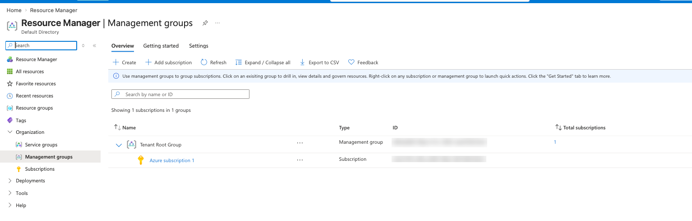
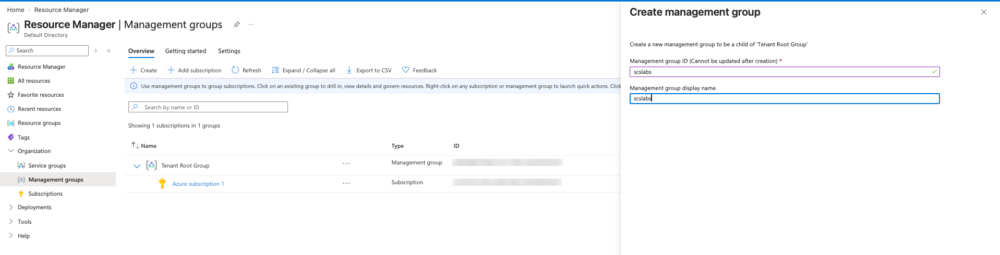
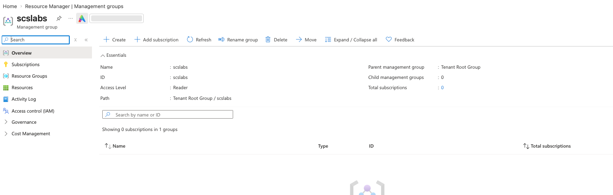
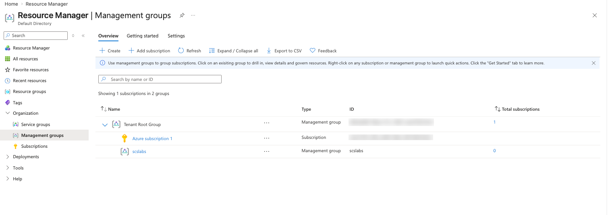
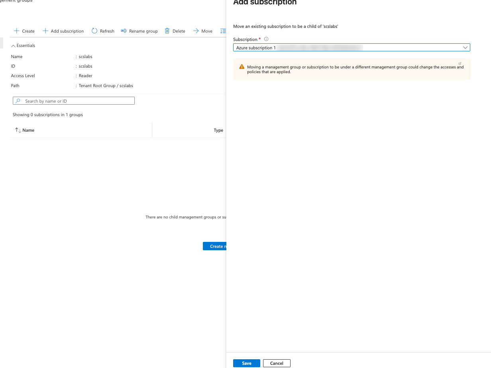
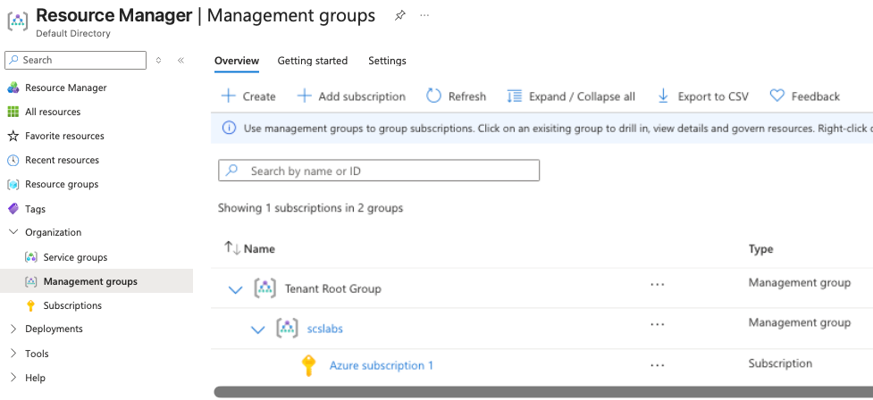
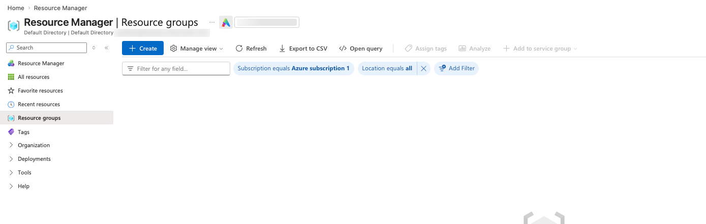
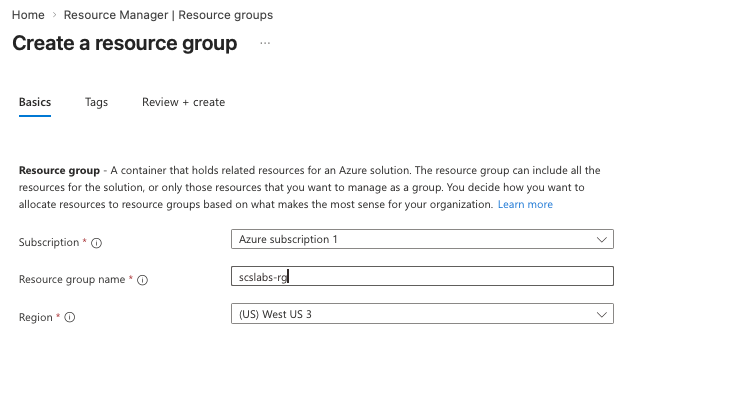
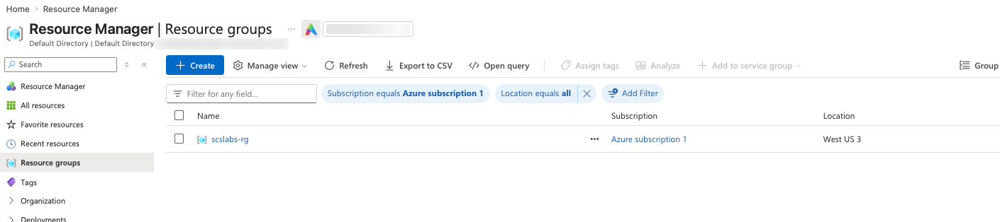

Before you deploy a single VM in Azure, you should know where it will live, who controls it and who pays for it. All three answers come from the same five-level hierarchy. This post explains each level, then walks through building it in the Azure portal.
Azure organizes everything in a tree. Each level sits inside the one above it:
A simple way to remember it: the tenant answers who (identities), the subscription answers who pays, the resource group answers what belongs together, and management groups let you set rules for many subscriptions at once.
Coming from OCI? The closest match is: tenant ≈ OCI tenancy, management groups and resource groups ≈ nested compartments, subscription ≈ a billing account inside the tenancy. The difference is that Azure separates billing (subscription) from grouping (resource group), while OCI uses compartments for both access and grouping.
A tenant is a dedicated instance of Microsoft Entra ID (formerly Azure Active Directory) that represents one organization. It is created automatically when you sign up for Azure, Microsoft 365 or another Microsoft cloud service. In the portal it appears as the Directory, for example "Default Directory".
The tenant holds identities, not workloads:
<name>.onmicrosoft.com domain, and you can add your own custom domain.Because the subscription trusts the tenant, only identities from that tenant (plus invited guest users) can be given access to its resources.
A management group is a container for subscriptions and other management groups. You use it when you have more than a couple of subscriptions and want to apply Azure Policy and role-based access control (RBAC) once instead of repeating them on every subscription.
Every tenant has a single top-level management group called the Tenant Root Group. All management groups and subscriptions fold up into it, so a policy assigned at the root applies to everything in the directory.
Things to know before you create one:
A subscription is an agreement with Microsoft to use Azure services, and every resource you create is billed to one. It is the level most people touch first: the free account you sign up with creates "Azure subscription 1".
A subscription is three kinds of boundary at once:
| Boundary | What it means |
|---|---|
| Billing | Costs are reported and invoiced per subscription. Teams often get separate subscriptions so their costs stay apart. |
| Access | RBAC roles such as Owner, Contributor or Reader can be assigned at subscription scope and apply to everything inside. |
| Scale / quota | Limits such as vCPU quota per region apply per subscription. Large workloads are sometimes split across subscriptions to stay under them. |
Common subscription types: Free trial, Pay-As-You-Go, Enterprise Agreement, Microsoft Customer Agreement and CSP (bought through a partner). A typical company separates environments into subscriptions, such as Dev, Test and Prod, or by business unit.
A resource group is a logical container inside a subscription for resources that belong to the same solution and share a lifecycle. If you deploy them together, update them together and delete them together, they belong in the same resource group.
Two common ways to divide resources into groups: by application (everything for the payroll app in payroll-prod-rg) or by function (all shared networking in network-rg). Most organizations mix both.
A resource is any manageable item you create in Azure: a virtual machine, a disk, a storage account, a virtual network, a public IP, an Azure SQL database, a Key Vault. Each resource is created by a resource provider (for example Microsoft.Compute for VMs or Microsoft.Storage for storage accounts), and all requests pass through Azure Resource Manager (ARM), the deployment and management layer behind the portal, CLI, PowerShell and templates.
Every resource has a unique resource ID, and its path shows exactly where the resource sits in the hierarchy:
The reason the hierarchy matters is inheritance. Anything you assign at one level, whether an RBAC role, an Azure Policy or a budget, applies to every level below it.
| Scope | Typical things to assign there |
|---|---|
| Management group | Company-wide policies (allowed regions, required tags), security baselines, platform team roles |
| Subscription | Budgets and cost alerts, environment owners, Defender for Cloud plans |
| Resource group | Application team access, resource locks, tags for cost allocation |
| Resource | Very specific access, for example one person allowed to read one Key Vault |
Goal: create a management group called scslabs, move the free subscription under it, and create a resource group called scslabs-rg in West US 3.
You need: an Azure free account (or any subscription) and a user who is Owner of the subscription. Everything in this lab is free.
In the portal search bar, type Management groups (it lives under Resource Manager → Organization). Out of the box you see one Tenant Root Group with your Azure subscription 1 directly under it. You never created the root group; Azure made it for the tenant.

Click + Create. Enter scslabs as the Management group ID and scslabs as the display name, then submit. Notice the label "Cannot be updated after creation" next to the ID, so pick IDs carefully in real environments. The panel also confirms the new group will be a child of the Tenant Root Group.

Open scslabs. The Essentials section shows the Path Tenant Root Group / scslabs, the parent group, and 0 subscriptions and child groups. The left menu shows that a management group has its own Access control (IAM), Governance (policy) and Cost Management, which is where you would assign the inherited settings from section 7.

Back on the Management groups list, the tree shows "1 subscriptions in 2 groups". At this point scslabs and the subscription are siblings, both directly under the root.

Open scslabs and click + Add subscription. Choose Azure subscription 1 and click Save. Read the warning: moving a subscription under a different management group can change the access and policies applied to it. That is inheritance at work.

Refresh the list. The tree is now Tenant Root Group → scslabs → Azure subscription 1. Any policy or role assigned on scslabs now applies to the subscription and everything in it.

Search for Resource groups. The list is filtered to Subscription equals Azure subscription 1 and is empty, because a new subscription has no resource groups.

Click + Create and fill in the Basics tab:
scslabs-rgOptionally add tags such as env=lab and owner=nithin on the Tags tab, then Review + create → Create. Remember the region here only decides where the group's metadata is stored.

scslabs-rg now appears in the list, in Azure subscription 1, location West US 3. The full chain is in place: Tenant → Tenant Root Group → scslabs → Azure subscription 1 → scslabs-rg.

To complete the last level, open scslabs-rg → + Create → Storage account. Use a globally unique lowercase name such as scslabsst<yourinitials>01, region West US 3, Standard performance and LRS redundancy. After deployment, open the storage account → Properties (or JSON View) and compare its Resource ID with Figure 2.
Delete scslabs-rg (this also deletes the storage account). If you don't want to keep the management group, move the subscription back to the Tenant Root Group first, then delete scslabs. A management group can only be deleted when it has no children.
Everything above can be scripted, which is the first step toward the automation you will want later. Run these in Azure Cloud Shell (Bash) or a local Azure CLI after az login.
# Find your subscription ID
az account show --query "{name:name, id:id, tenant:tenantId}" -o table
# 1. Create the management group
az account management-group create --name scslabs --display-name scslabs
# 2. Move the subscription under it
az account management-group subscription add \
--name scslabs --subscription "<subscription-id>"
# 3. View the hierarchy
az account management-group show --name scslabs --expand -o jsonc
# 4. Create the resource group
az group create --name scslabs-rg --location westus3 --tags env=lab
# 5. Create a resource inside it
az storage account create --name scslabsst01xyz \
--resource-group scslabs-rg --location westus3 \
--sku Standard_LRS --kind StorageV2
# 6. Show the resource ID
az storage account show -n scslabsst01xyz -g scslabs-rg --query id -o tsvClean up:
az group delete --name scslabs-rg --yes --no-wait
az account management-group subscription remove \
--name scslabs --subscription "<subscription-id>"
az account management-group delete --name scslabsImagine a mid-size company, "Northwind Health" (a made-up name), moving its workloads to Azure. It has a central platform team, two business apps, and developers who want somewhere to experiment. A management group layout based on Microsoft's Cloud Adoption Framework landing zone pattern could look like this:
| Management group | What goes in it | Example policies / roles |
|---|---|---|
| Northwind (top) | Everything the company owns | Allowed regions = Central India, South India; tags costcenter and owner required |
| Platform | Shared services: identity, hub network, logging | Only the platform team has Contributor |
| Landing Zones | Business application subscriptions | No public IPs on VMs; diagnostics must go to central Log Analytics |
| Sandbox | Developer experiments | Low budget alerts; no connection to the corporate network |
| Decommissioned | Subscriptions being retired | Deny all new deployments |
Inside sub-claims-prod, resource groups follow the application's lifecycle: claims-web-rg (App Service, Front Door), claims-data-rg (Azure SQL, storage, with a delete lock) and claims-monitor-rg. When the dev team needs a fresh environment, they deploy into sub-claims-dev, where the same company policies already apply because they are inherited from the top.
The result: finance sees cost per subscription, security sets rules once at the top, and application teams get Contributor on only their own resource groups.
Pick an answer to see whether it's right and why.
Next in the series: Azure RBAC and Azure Policy, assigning both on the scslabs management group we built today.